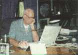
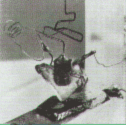
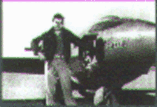
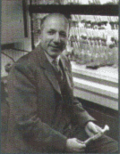
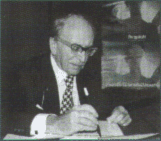

| |
|
1944
Ýsviçreli
farmakolog Daniel Bovet, histamin etkisini engelleyerek vücudun
alerji tepkilerini yatýþtýrabilen antihistaminik ilaçlarýn
ilk örneði olan prilamini elde etti.
|
| 1945
  Ýngiliz
Arthur C. Clarke, yereksenli uydularýn Dünya'da
birbirinden uzakta yer alan noktalar arasýndaki iletiþim
için röle (aktarma) istasyonu olarak görev
yapabileceklerini gösterdi. Ýngiliz
Arthur C. Clarke, yereksenli uydularýn Dünya'da
birbirinden uzakta yer alan noktalar arasýndaki iletiþim
için röle (aktarma) istasyonu olarak görev
yapabileceklerini gösterdi.
|
| 1945 J.
presper Eckert ve John W. Mauchly ilk otomatik elektronik
sayýsal bilgisayarý yaptýlar. Ertesi yýl John
Ragazzini ve yardýmcýlarý ABD Ulusal Savunma Araþtýrma
Komitesi için ilk genel amaçlý tümüyle elektronik
prototipi geliþtirdiler.
|
| 1947
 John
Bardeen, W. Brittain ve W. Shockley transistörü
buldular. Elektrik sinyallerinin yükseltilmesini,
denetlenmesini ya da
üretilmesini saðlayan bu buluþlarýndan dolayý üç
bilim adamý 1956'da Nobel Fizik Ödülü'nü aldýlar.
Artýk seri halde üretilebilen ve daha az yer kaplayan
elektronik aletler yapmak mümkündür.
|
| 1947
 "Sesduvarý"
aþýldý. ABD'li pilot Chuck Yeager, roketlerle takviye
edilmiþ Bell X-1 adlý uçaðýyla saatte 1190
kilometreyi aþmayý baþardý. Bu uçuþun ardýndan birçok
havacýlýk firmasý sesten hýzlý gidebilen uçaklar üretti.
Sesten hýzlý sivil uçaklarýn ilkiyse uçuþlarýna
1976 yýlýnda baþlayan Ýngiliz-Fransýz ortak yapýmý
Concorde oldu.
|
|
| 1942
ABD,
atom bombasý yapýmýna yönelik olarak gizli Manhattan
projesini baþlattý. Robert Oppenheimer'ýn baþkanlýgýnda
yürütülen proje 1945 yýlýnda sonuçlandý. Ýlk
atom bombasý 16 Temmuz 1945'te Albuquerque'te bulunan
bir hava üssünde denendi. Ani bir þok dalgasý, yoðun
ýþýk yayýlmasý ve sýcaklýk dalgalarýnýn ardýndan
gelen mantar þeklinde bir duman bu patlamanýn sonuçlarýndandý.
Bombanýn açýða çýkardýðý enerji 15 bin ton
TNT'ninkine eþitti. Bu denemeden 1 ay sonra Japon
kentleri Hiroþima ve Nagazaki'ye atom bombasý atýldý. |
| 1946
 ABD'li
biyokimyacý
Melvin Calvin, yeþil bitkilerin ýþýk enerjisini,
karbondioksiti ve suyu büyümeleri içit gerekli olan
bileþiklere dönüþtürdükleri fotosentez olayýndaki
kimyasal tepkimeleri ortaya çýkardý.
|
| 1947
Frank
Willard Libby, kazýbilimciler, insanbilimciler ve
yerbilimciler için çok deðerli olan radyoaktif
karbonla (karbon-14) tarihleme yöntemini geliþtirdi.
|
| 1948
 Macar
asýllý bilim adamý Dennis Gabor, holografi düþüncesini
geliþtirdi. Mercek kullanmaksýzýn üç boyutlu bir görüntü
oluþturma yöntemi olan holografi, uzun yýllar
kuramsal olarak kalacak, ancak lazerin icadýndan sonra
gerçekleþtirilecektir.
|
|
|